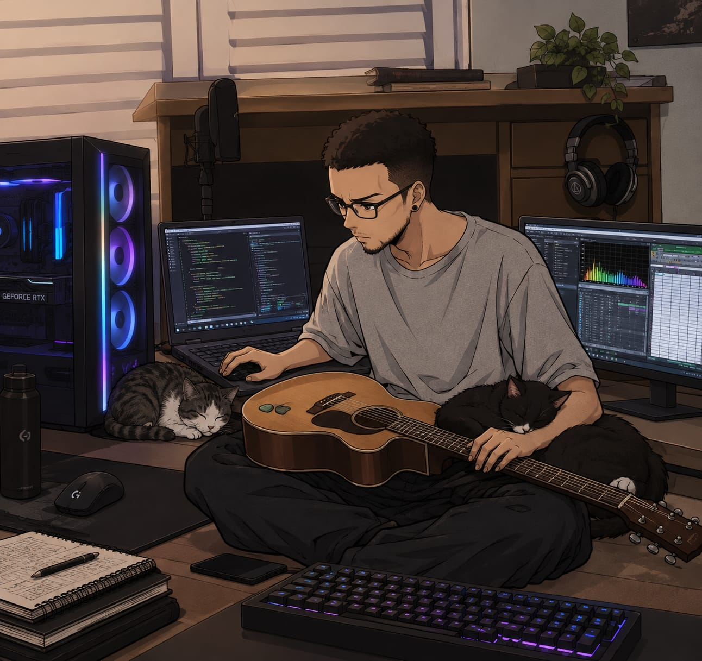

2016-2018
Técnico em Edificações
ETEC Getulio Vargas - Curso na area de construção civil, focado em construções de até 80m²
Sou estudante de ADS e estou começando minha trajetória na área de tecnologia, este portfólio reúne um pouco sobre mim, algumas curiosidades, meus estudos, interesses e o que venho aprendendo durante o curso
IFSP ADS 1/6
26 anos, casado, recem chegado em serra negra e iciando uma nova jornada na area de Técnologia Aprenendo um pouco mais a cada dia, buscando ingressas na area de dedos como data scienctist
Apesar de estar no IFSP, não é minha primeira formação academica, tãopouco meu primeiro contato com universidade. Formei como tec em edificações, fiz engenheira civil e arquitetura no IFSP, mas não finalizei por não me identificar com a area
Tenho como principal objetivo meu crescimento academico e profissional e ingressar na area de ciencia de dados o quanto antes

ETEC Getulio Vargas - Curso na area de construção civil, focado em construções de até 80m²
IFSP - Curso superior na área de Construção civil, com enfoque principalmente em pontes com estrutura estaiada.
IFSP - Curso superior na área de Construção civil, com enfoque principalmente em pontes com estrutura estaiada.
IFSP (BRA) - curso superior na área de tecnologia, com estudos envolvendo programação, desenvolvimento web, arquitetura de computadores, lógica e fundamentos relacionados ao desenvolvimento de sistemas
Atualmente trabalho com o software de simulação 3D Promob - estou fazendo um curso de redraw - uma ferramente de renderização 3D integrada com a ia
Apaixonado pela saga Final Fantasy, Pokemon e MMORPG no geral. Tenho mais horas em FFXIV do que eu gostaria de admitir.
Rockeiro desde berço, aprendi a tocar guitarra com 12 anos, com o tempo, fui evoluindo e aprendi mais instrumentos e apreciar mais ritmos. Acabei tocando em roda da samba, grupo de forró, igreja banda de heavy-metal e por ai vai.
Pai de duas gatinhas, Saphira e Pandora (Essa particularmente é bem atendada e quase destruiu meu computador quando era filhote)
Setup atual: GTX 1650, 32GB RAM DD4, Intel i7 13th gen
desenvolvimento deste próprio portfólio utilizando html, css e javascript, com layout responsivo
atividades relacionadas aos principais componentes de um computador, armazenamento, memória, processador e funcionamento básico do hardware
prática de raciocínio lógico e resolução de exercícios para desenvolver uma base melhor antes de avançar para projetos maiores de programação
Pretendo ir sempre atualizando essa pagina com novidades sobre minha carreia academica, espero que tenham gostado! Voltem mais vezes :D